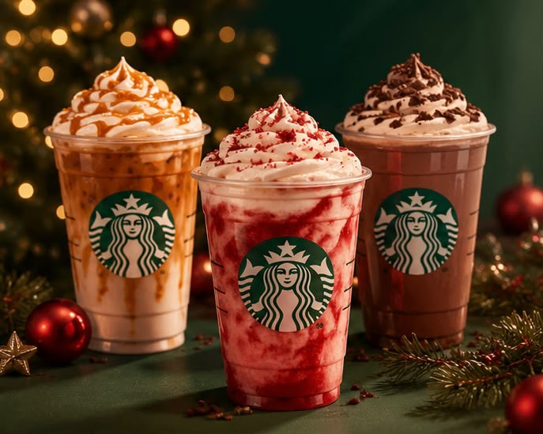
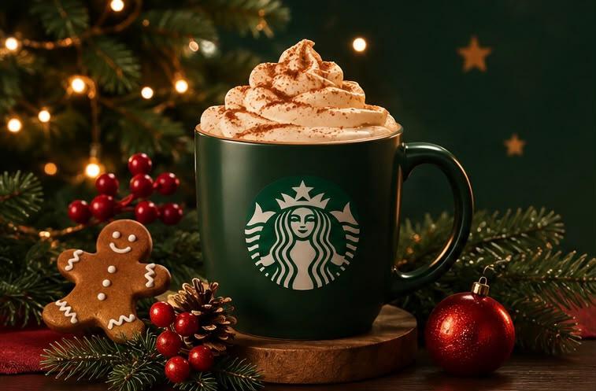
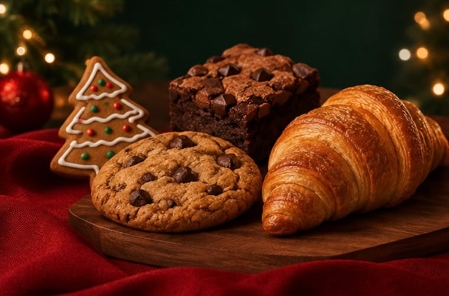
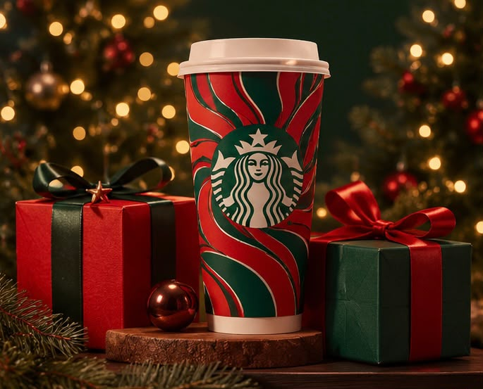

Bebidas especiais
Cafés, cappuccinos e frappuccinos com aromas que aquecem o coração.
The Magic of Christmas Starts Here
Descubra bebidas artesanais, sobremesas aconchegantes e momentos especiais preparados para transformar cada encontro em uma lembrança de fim de ano.


Cafés, cappuccinos e frappuccinos com aromas que aquecem o coração.

Croissants, cookies, brownies e sabores irresistíveis para celebrar.

Sabores exclusivos e combinações cheias de tradição para a temporada.
Entre no clima de Natal